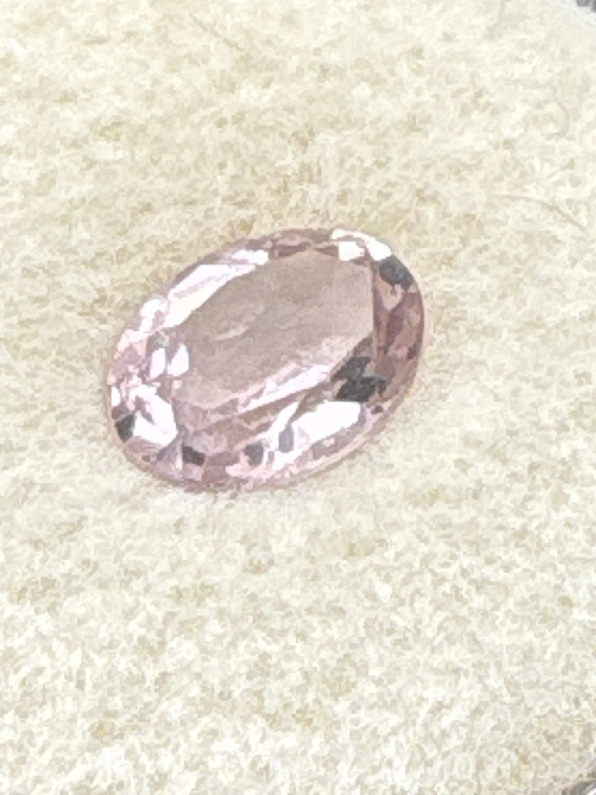

The Gem Drawer › No. 131

A soft dusty rose oval from the specimen tray.
| Catalogue no. | #131 |
|---|---|
| As labeled | UNIDENTIFIED - pale pinkish-mauve oval-cut stone (no label; visual ID only, possibly morganite, pink tourmaline, or kunzite - see notes) |
| Shape / cut | Oval |
| Weight | Not recorded |
| Measurements | Not recorded |
| Colour | Pale pinkish-mauve / dusty rose |
| Clarity / condition | Not recorded |
Interested in this stone, or in the collection as a whole? Terry VanWormer can answer questions about it.
Click here to inquireor email Terry directly at maxrebo34@gmail.com